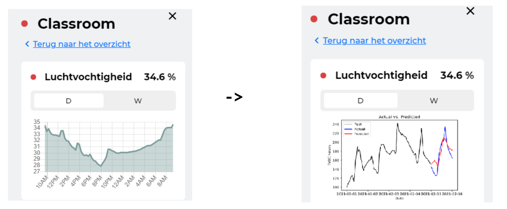
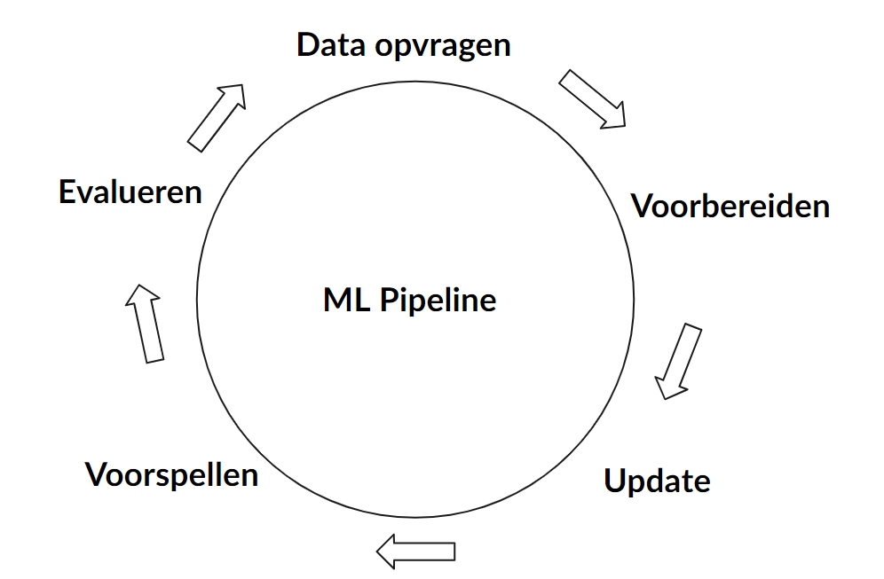
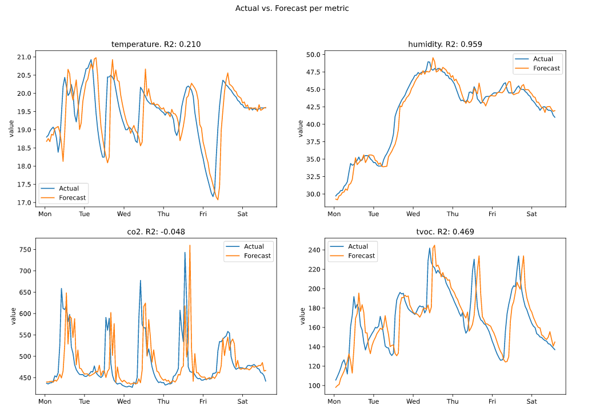

Realiseren
Manier van aanpak
Tijdens het realiseren van het project is de scrum methode toegepast. Dit betekend dat er gewerkt is in sprints van twee weken. Aan het eind van deze twee weken zijn demo's gegeven aan de mede stagiairs en begeleiders. Daarnaast heeft er iedere vier weken een oplevering voor de belangrijkste stakeholders, Handpicked Labs & Techtenna plaatsgevonden.
In de onderstaande secties zal per oplevering de geplande werkzaamheden, de gerealiseerde werkzaamheden, feedback en reflectie worden toegelicht.
Oplevering 1: Ontwerp
De eerste oplevering had vooral betrekking op het ontwerp van de applicatie en de machine learningmodellen. Meer details over het ontwerp kunnen gevonden worden op de "Ontwerpen" pagina.
Geplande- en afgeronde werkzaamheden
| Sprint # | Werkzaamheden | Afgerond |
|---|---|---|
| 3 | Data requirementsanalyse | Ja |
| 3 | Data verzameling | Ja |
| 4 | Modelexperimenten | Ja |
| 4 | Ontwerp | Ja |
Resultaten
Tijdens het ontwerpen van de applicatie werd duidelijk dat de modellen redelijk lastig waren om te ontwikkelen. Het oorspronkelijke doel was om voor alle service lagen, luchtkwaliteit, energiebesparing en brandveiligheid, modellen te ontwikkelen. Dit doel bleek niet realistisch te zijn.
Om te voorkomen dat de machine learningmodellen falen in de productie omgeving was voorgesteld om het doel te beperken tot luchtkwaliteit. Hierdoor kon er meer aandacht besteed worden aan het ontwikkelen van een systeem wat periodiek de modellen update en evalueert. Wanneer dit goed werkt kan het uitgebreid worden naar de andere service lagen.
Feedback
Op het eind van de opleveringspresentatie1 werd het voorstel gedaan om het doel aan te passen. De reacties hierop waren positief. De stakeholders van Handpicked Labs & Techtenna vonden het een goed idee om klein te beginnen, een robuust systeem te bouwen en daarna uit te breiden.
Reflectie
Het grootste gedeelte van deze sprints had ik besteed aan de experimenteren. Hierbij was het doel om voor vier verschillende meetwaarden een geschikt model te vinden. Om deze modellen te ontwikkelen waren verschillende technieken onderzocht2.
Ik had wat moeite met geschikte modellen ontwikkelen, de ARIMA-modellen werkte uiteindelijk het beste maar het is een techniek waar ik nog nooit mee gewerkt had en het bleek lastiger dan verwacht. Na wat experimenten uit te voeren vond ik een goede bron voor dit type machine learning3. In de toekomst zou het beter zijn als ik eerst dit soort bronnen zoek voordat ik begin met experimenteren.
Oplevering 2: Integratie ARIMA-modellen
Vorige oplevering waren het ontwerp en doelswijzigvoorstel goedgekeurd. Deze oplevering was een eerste versie van dit ontwerp geïmplementeerd.
Geplande- en afgeronde werkzaamheden
| Sprint # | Werkzaamheden | Afgerond |
|---|---|---|
| 5 | Pipeline implementatie | Ja |
| 6 | Front-end aanpassingen | Ja |
Resultaten
In de onderstaande afbeelding is te zien hoe de gewenste uitkomst van de implementatie gepland was. In de linker afbeelding is de startsituatie te zien, dit is een visualisatie van de luchtvochtigheid van de afgelopen dag. In de gewenste eindsituatie wordt deze visualisatie uitgebreid met de verwachte luchtvochtigheid voor de komende uren.

Om deze situatie te kunnen realiseren is de pipeline zoals deze in het ontwerp is beschreven ontwikkeld. Onderstaand is in een schematische tekening te zien hoe deze pipeline functioneert.
Periodiek wordt er nieuwe data opgevraagd die voorbereid wordt om de ARIMA-modellen te updaten. Hierna worden voorspellingen en evaluaties gemaakt die opgeslagen worden in een database. Deze worden beschikbaar gesteld via een API om, bijvoorbeeld, in het front-end gevisualiseerd te worden.

Onderstaand is te zien hoe deze voorspellingen verwerkt waren in het front-end. Het eind resultaat lijkt redelijk op de gewenste eindsituatie. Er zijn echter wat onderdelen die niet naar verwachting werkte.
- De voorspelling is slechts een uur in de toekomst.
- De ARIMA-modellen zijn erg groot (>1GB).
- De voorspellingen zijn niet accuraat genoeg.
Feedback
Tijdens de opleveringpresentatie4 werd de onderstaande afbeelding getoond. Hierin is te zien dat de voorspellingen altijd ~1 uur achter lijken te lopen. Om dit op te lossen is veel tijd besteed aan het controleren met welke data de modellen werden geüpdatet en voor welke tijdstippen de voorspellingen werden gemaakt.
Uiteindelijk is er, mede door feedback van Marco van Techtenna, tot de conclusie gekomen dat dit een eigenschap is van de ARIMA-modellen. Tijdens de tweede modelexperimenten is deze feedback meegenomen.

Andere feedback was dat de impact van de visualisatie niet sterk genoeg was om mensen aan te sporen de situatie te veranderen. Aangezien dit de kern van het probleem is hiervoor een tweede iteratie van de machine learningmodellen uitgevoerd.
Reflectie
Tijdens de 5e en 6e sprint was ik vooral bezig met het omzetten van de modelexperimenten naar een geautomatiseerde pipeline. Hierbij heb ik een API ontwikkelt en het front-end uitgebreid. Via deze API kan de front-endapplicatie voorspellingen ophalen om te visualiseren.
De voorspellingen die uiteindelijk gevisualiseerd waren maakte niet de gewenste impact en waren niet accuraat genoeg. Hierdoor moest ik meer modelexperimenten uitvoeren.
Daarnaast had ik voor het implementeren van de applicatie maar een sprint ingepland. Uiteindelijk had ik een complete sprint nodig om alleen de pipeline en API te ontwikkelen en een extra halve sprint om het front-end uit te breiden. Hierdoor verwachte ik in tijdsnood zou kunnen komen.
Oplevering 3: Iteratie op integratie
Na aanleiding van de feedback op de tweede iteratie waren nieuwe modelexperimenten uitgevoerd. Deze modellen zijn gebruikt om de pipeline en de front-endapplicatie aan te passen.
Geplande werkzaamheden
| Sprint # | Werkzaamheden | Afgerond |
|---|---|---|
| 7 | Modelexperimenten | Ja |
| 8 | Pipeline aanpassingen | Ja |
| 8 | Front-end aanpassingen | Ja |
| 8 | Meldingen weergeven | Nee |
Gerealiseerde werkzaamheden
Voordat begonnen was aan het implementeren van de nieuwe modellen in de pipeline en front-end was er een mock-up gemaakt van de gewenste eindsituatie.
Door de korte termijn voorspellingen een aparte balkgrafiek te visualiseren en de kleur aan te passen wanneer bepaalde waarden worden overschreden wordt er een grotere impact gemaakt. Op deze manier zal de gebruiker aangespoord worden om in te grijpen wanneer de situatie dreigt te verslechteren.
De aanpassingen die aan de pipeline gemaakt moesten worden waren minimaal. Over het algemeen kon de applicatie versimpeld worden omdat het machine learningmodel niet afhankelijk is van timestamps.
Onderstaand is de front-endimplementatie van de mock-up van afbeelding 5 te zien. De realisatie was succesvol, er zijn echter nog wat verbeter punten:
- Datum objecten worden niet goed vertaald naar labels
- Horizontale belijning is hardcoded.
Feedback
Tijdens de presentatie5 waren de meningen erg positief. De stakeholders vonden dat de feedback die voorgaande oplevering gegeven was goed verwerkt was.
De manier waarop de voorspelling worden gevisualiseerd is op deze manier beter en spoort aan om in te grijpen wanneer de situatie dreigt te verslechteren.
Reflectie
Gedurende de zevende en achtste sprints ben ik bezig geweest met modelexperimenten uitvoeren en de resulterende modellen verwerken in de pipeline en front-endapplicatie. Hierbij was het doel om de drie geïdentificeerd problemen op te lossen.
Om niet opnieuw het wiel uit te vinden, iets wat de voorgaande iteratie wel het geval was, was ik begonnen met het zoeken naar vergelijkbare oplossingen voor het machine learningmodel. Hierdoor kon ik gerichter werken, wat resulteerde in een beter machine learningmodel. Ik ben erg tevreden met deze manier van werken en zal dit in de toekomst vaker toepassen.
Het verwerken van het model in de pipeline ging vlot. Ik had er rekening mee gehouden dat er veranderingen konden plaatsvinden en kon hier snel op inspelen. Wel is het nog redelijk veel werk om modellen te verwijderen of te vervangen. Wanneer dit product echt gebruikt gaat worden zal hier een oplossing voor gevonden moeten worden.
De front-endimplementatie verliep niet zo soepel. Ik ben erg lang bezig geweest om met Chart.js informatieve grafieken te maken. Aangezien ik hier nog geen ervaring mee had ging het erg moeizaam. Daarnaast ging door een update aan het package de date parsing kapot. Momenteel heb ik dit handmatig opgelost maar dit resulteert nog niet in de gewenste visualisaties.